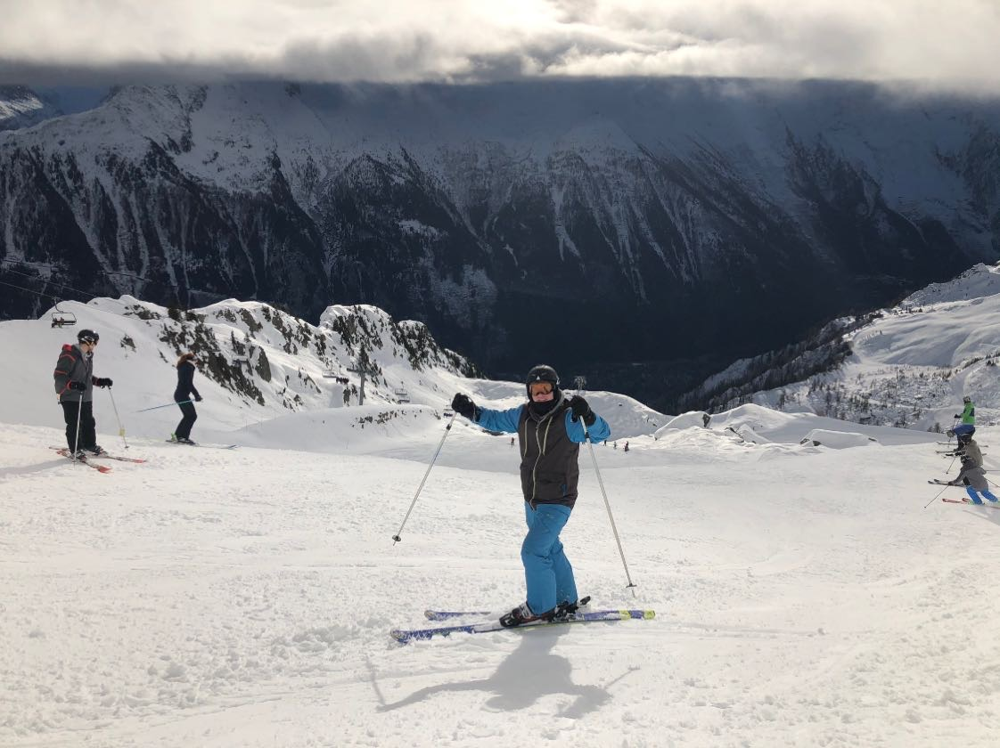

The Northeastern United states also known as the Northeast, is home to some of the best all around ski resorts in the country. This website is designed to give people an understanding of what the northeast has to offer in respect to skiing. We will be diving deeper into 5 particular ski resorts, across 5 different states: Vermont, Pennsylvania, Maine, New York, and New Hampshire.
Killington Ski Resort is the largest ski area in the eastern U.S., and has the second largest vertical drop in New England at 3,050 feet (930 meters). Killington's top elevation is 4,229 Feet, making it the second highest summit in Vermont. Starting in the 2013–14 ski season, it was given the title "Beast of the East." With just over 150 trails, ranging from beginner to expert, this mountain is perfect for just about any variety of skiier.
Located in Berks County, Pennsylvania, this ski resort opened its doors in 1967. Formally known as Doe Mountain until 1999, this resort is available year round. WIth only 21 trails and elevation of 1,100 ft, it is perfect for beginners or anyone willing to give skiing a try. On top of skiing, the resort offers a variety of atcivities including snowtubing.
Sunday River is a ski resort located in Newry, Maine, in the United States. It is one of Maine's largest and most visited ski resorts. Its vertical drop of 2,340 feet (710 m) is the second largest in Maine (after Sugarloaf) and the sixth largest in New England. The mounatin also has a top elevation of 3,140 feet along with nearly 135 trails crossing six different peaks.
Whiteface Mountain located in Lake PLacid, NY is the fifth-highest mountain in the U.S. state of New York, and one of the High Peaks of the Adirondack Mountains. Set apart from most of the other High Peaks, the summit offers a 360-degree view of the Adirondacks and clear-day glimpses of Vermont and even Canada on a sunny day. Whiteface Mountain has a top elevation of 4,386 feet and 87 trails. Known to be a more agressive mountain, Whiteface is home to some very diffcult trails and is mainly designed for expert skiiers. in 1980, Whiteface Mountain was the prime venue for the Winter Olympics and is consistently ranked as one of the top resorts in the Northeast. If you think the mountain is too challenging, the city of Lake Placid offers a variety of things to do including the Olympic Village.
Loon Mountain Ski Resort is a ski resort in Lincoln, Grafton County, New Hampshire, United States. It is located on Loon Mountain and sits within the White Mountain National Forest. Its vertical drop of 2,109 feet (643 m) is the tenth largest in New England. Founded in the 1960s, Loon Mountain hosts more skiiers than any other other mountain in New Hampshire. With a top elevation of 3,050 feet and 61 trails, this is most definitely a family friendly resort.
Background: Current Student at Syracuse University with a passion for skiing. Raised a skier at the age of 3, I have always loved being able to go out and adventure whenever possible. I was born in Connecticut and grew up traveling to numerous mountains within the Northeast area for much of my life. One of my more recent goals was to ski the swiss alps, which I was able to accomplish in December of this year.
